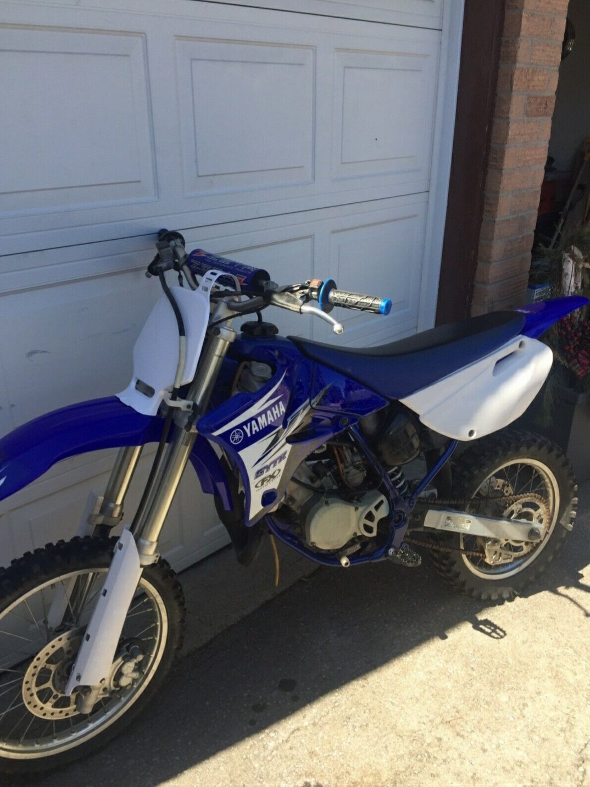
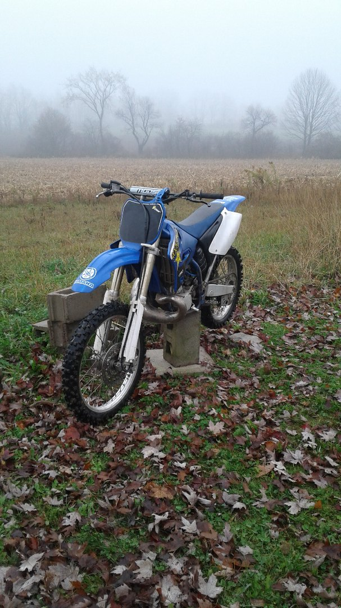

Comparing a Yamaha yz250 2 stroke to a Yamaha yz85 2 stroke
First thing you can say about these bikes is they are both Yamaha. You can tell right away by not even looking at them. Another thing that is the same about them is they are both race bikes. I'm going to quickly compare a 2 stroke to a 4 stroke, so both these bikes have a 2 stroke motor which means the bikes are lighter. They produce more power than a 4 stroke motor and an 85 2 stroke would be as powerful as a 170 cc 4 stroke bike but they don't make a 4 stroke in that displacement they only make 125 4 stroke, and 230 4 stroke but those are trail bikes so they don't produce as much power. One both bike the chain is on the left side, they both have the same color scheme.
The yz85 sits lower to the ground than the yz250, this means the bike is meant for younger or shorter people. The yz85 is a starter bike, it doesn't have as much horse power as a yz250, so the yz250 is for a more experienced rider, someone who knows how to handle a 2 wheeled vehicle with slipping the rear tire. Another thing you can tell that’s different is the numbers. The numbers are the displacement of the motor. Which means cubic centimeters, which means the yz250 has a larger motor. The yz250 weighs 223 pounds, and the yz85 weighs 157 pounds. So the yz250 weighs more because it is physically larger, has a bigger motor, the frame is bigger so it weighs a little more than a yz85. The yz250 makes up its weight in horsepower and torque. One major difference with the yz250 is it does have a power valve on the exhaust side which the yz85 does not have.
 By Adrian